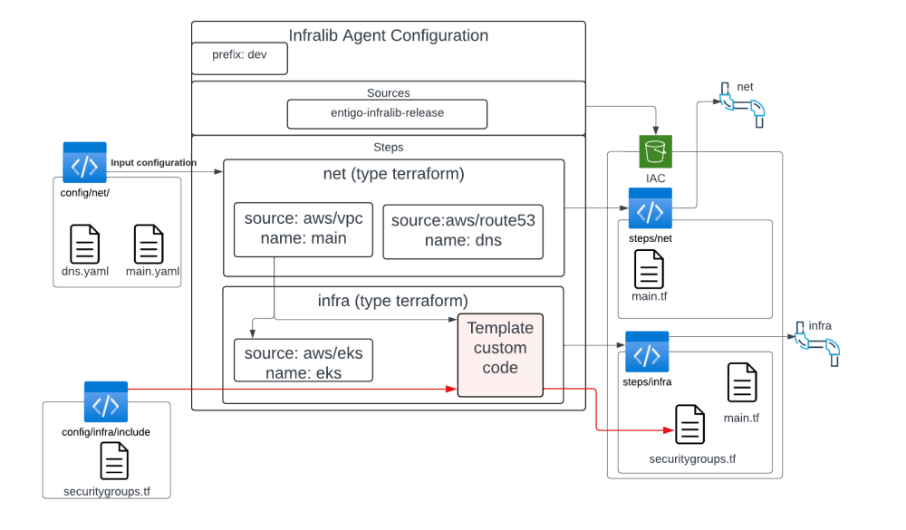
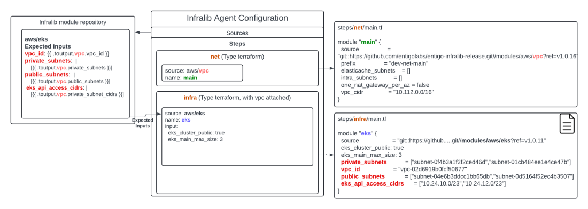
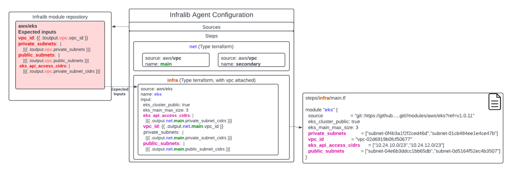
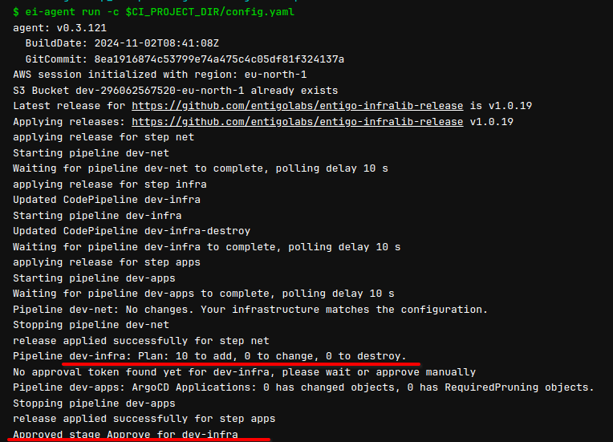
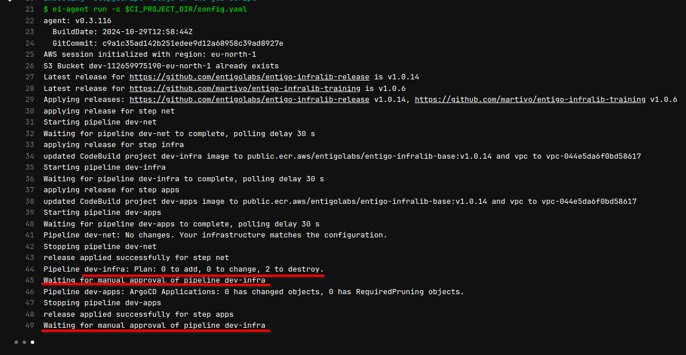
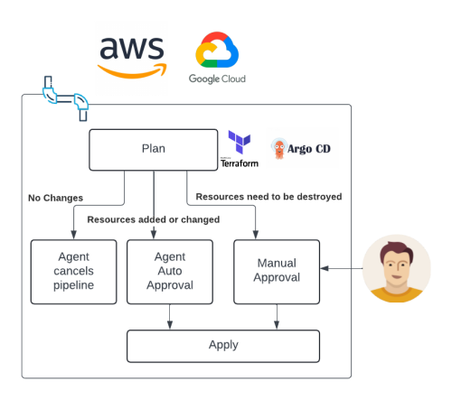
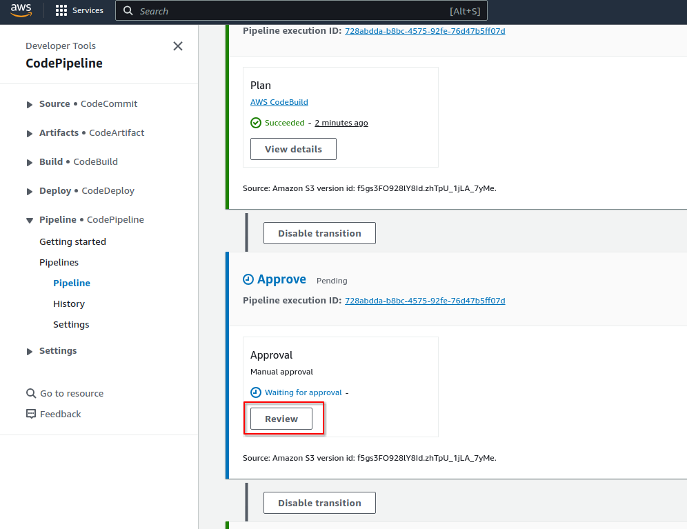
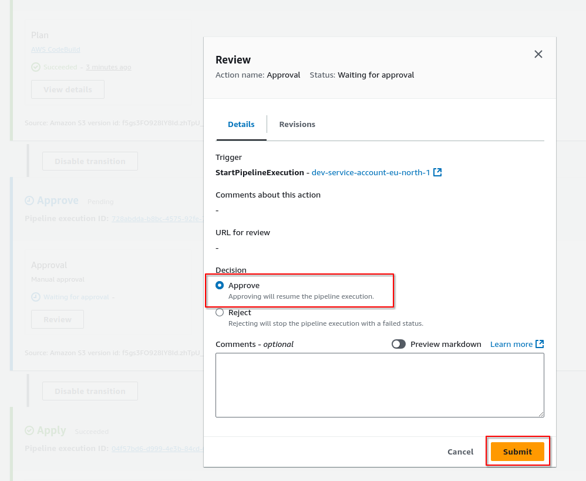
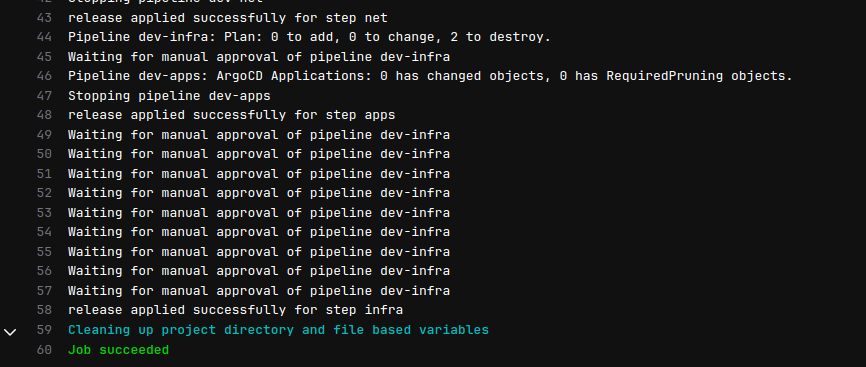

Infralib - Lab 3: Custom code and modules

In this lab custom Terraform code and modules are added to customize the existing project. Find out how Infralib Agent can help with module configuration and automatic approval.
Create a Security Group that is specific to this environment using a regular "tf" file.
Some values will be taken from the "net" steps "vpc" modules output with the help of the ".output" variable.
Show ~/3/securitygroups.tf +
resource "aws_security_group" "developers" {
name = "{{ .config.prefix }}-developers"
description = "SSH Access"
vpc_id = "{{ .output.net.main.vpc_id }}"
tags = {
Name = "{{ .config.prefix }}-developers"
}
}
resource "aws_security_group_rule" "developers-i" {
type = "ingress"
from_port = 22
to_port = 22
protocol = "tcp"
cidr_blocks = [{{ .output.net.main.public_subnet_cidrs }}, "185.46.20.32/28"]
security_group_id = aws_security_group.developers.id
}
The Infralib Agent templates can also be used inside of the included files, not only in the config file itself.
In this example the "{{ .config.prefix }}" is translated to "dev" - the value is taken from the config.yaml "prefix" parameter.
The "{{ .output.net.main.vpc_id }}" and "{{ .output.net.main.public_subnet_cidrs }}" are referring to the "net" steps module named "main".

Infralib modules can define their expected inputs as part of the module code.
Users do not not have to configure these inputs unless they want to - avoiding mistakes and saving time.
This is why the "aws/eks" module did not have to configure a "vpc_id" or "public_subnets" input in the configuration. But the generated infrastructure code in "main.tf" does contain the inputs with correct values.

The ".toutput" template works even when the step names or module names are changed. It will find the inputs regardless whether the other module is in the same step or not.
The module that is creating the outputs can originate from another source or be entirely replaced as long as it provides the same output parameters.
The ".touput" does not work when a module is called multiple times. Then all the inputs have to be configured using ".output".

This works for Infralib Helm charts the same way.
Copy the Terraform code to the "include" folder of the "infra" step.
$ mkdir -p ~/iac/config/infra/include
$ cp ~/3/securitygroups.tf ~/iac/config/infra/include
To reduce code repetitions Terraform modules can also be used.
A module in the Github repository has been created for that purpose. https://github.com/martivo/entigo-infralib-training/tree/main/modules/aws/mariadb
Compare the changes of the configuration.
Show diff ~/iac/config.yaml ~/3/config_module.yaml +
sources:
- url: https://github.com/entigolabs/entigo-infralib-release
prefix: dev
steps:
- name: net
type: terraform
approve: major
modules:
- name: main
source: aws/vpc
- name: dns
source: aws/route53
- name: infra
type: terraform
approve: major
vpc:
attach: true
modules:
- name: eks
source: aws/eks
inputs:
eks_cluster_public: true
eks_main_min_size: 1
eks_main_max_size: 3
eks_main_volume_size: 100
eks_tools_desired_size: 1
eks_mon_max_size: 0
iam_admin_role: AWSReservedSSO_AWSAdministratorAccess
aws_auth_user: adminuser
cluster_enabled_log_types: |
[]
- name: crossplane
source: aws/crossplane
+ - name: database
+ source: git::https://github.com/martivo/entigo-infralib-training.git//modules/aws/mariadb
+ version: v2.0.30
+ inputs:
+ vpc_id: "{{ .output.net.main.vpc_id }}"
+ allowed_subnets: |
+ [{{ .output.net.main.private_subnet_cidrs }}]
+ database_subnet_group: "{{ .output.net.main.database_subnet_group }}"
+ allocated_storage: 21
- name: apps
type: argocd-apps
approve: major
modules:
- name: argocd
source: argocd
inputs:
argocd:
server:
ingress:
annotations:
alb.ingress.kubernetes.io/group.name: external
alb.ingress.kubernetes.io/scheme: internet-facing
- name: aws-alb-{{ .config.prefix }}
source: aws-alb
- name: crossplane-system
source: crossplane-core
- name: crossplane-aws
source: crossplane-aws
- name: external-dns-{{ .config.prefix }}
source: external-dns
- name: istio-base
source: istio-base
- name: istio-system
source: istio-istiod
- name: aws-storageclass
source: aws-storageclass
- name: metrics-server
source: metrics-server
- name: external-secrets-{{ .config.prefix }}
source: external-secrets
Copy the updated configuration and run the Infralib Agent.
$ cp ~/3/config_module.yaml ~/iac/config.yaml
$ cd ~/iac
$ git add --all
$ git commit -a -m"Create a database and Security Group."
$ git push
A pipeline in Gitlab has been triggered to apply the changes. https://gitlab.infralib.learn.entigo.io/app-uN/iac/-/pipelines

This time there are resource changes in the "dev-infra" pipeline. The agent will automatically approve it, because resources are only added.
Wait for the pipeline to finish and verify that the RDS database, access credentials in Secrets Manager and Security Group was created.
RDS https://eu-north-1.console.aws.amazon.com/rds/home?region=eu-north-1#databases:
Secrets Manager https://eu-north-1.console.aws.amazon.com/secretsmanager/listsecrets?region=eu-north-1
Security Group ("dev-developers") https://eu-north-1.console.aws.amazon.com/ec2/home?region=eu-north-1#SecurityGroups:
Copy the generated code into the lab server again to see what changed.
$ aws s3 cp --recursive --exclude '*/.terraform/*' s3://dev-$AWS_ACCOUNT-$AWS_REGION/steps ~/lab_3
The "database" module has been added to the "main.tf" file with the inputs filled. All the inputs of the module had to be configured.
$ cat ~/lab_3/dev-infra/main.tf
And the custom SG code we used was copied to "securitygroups.tf" but with the literal values.
$ cat ~/lab_3/dev-infra/securitygroups.tf
Using Infralib modules will automatically fill in the required inputs.
The database module that we used in the previous step is also an Infralib Module. Add the same module but as an Infralib Module.
The creation of a "ClusterSecretStore" for the k8s/external-secrets module is also enabled. This will enable applications to access any secret in AWS SM using "ExternalSecrets".
Show diff ~/3/config_module.yaml ~/3/config_il.yaml +
sources:
- url: https://github.com/entigolabs/entigo-infralib-release
+ - url: https://github.com/martivo/entigo-infralib-training
+ version: 2.0.30
prefix: dev
steps:
- name: net
type: terraform
approve: major
modules:
- name: main
source: aws/vpc
- name: dns
source: aws/route53
- name: infra
type: terraform
approve: major
vpc:
attach: true
modules:
- name: eks
source: aws/eks
inputs:
eks_cluster_public: true
eks_main_min_size: 1
eks_main_max_size: 3
eks_main_volume_size: 100
eks_tools_desired_size: 1
eks_mon_max_size: 0
iam_admin_role: AWSReservedSSO_AWSAdministratorAccess
aws_auth_user: adminuser
cluster_enabled_log_types: |
[]
- name: crossplane
source: aws/crossplane
- name: database
- source: git::https://github.com/martivo/entigo-infralib-training.git//modules/aws/mariadb
- version: v2.0.30
+ source: aws/mariadb
inputs:
- vpc_id: "{{ .output.net.main.vpc_id }}"
- allowed_subnets: |
- [{{ .output.net.main.private_subnet_cidrs }}]
- database_subnet_group: "{{ .output.net.main.database_subnet_group }}"
allocated_storage: 21
- name: apps
type: argocd-apps
approve: major
modules:
- name: argocd
source: argocd
inputs:
argocd:
server:
ingress:
annotations:
alb.ingress.kubernetes.io/group.name: external
alb.ingress.kubernetes.io/scheme: internet-facing
- name: aws-alb-{{ .config.prefix }}
source: aws-alb
- name: crossplane-system
source: crossplane-core
- name: crossplane-aws
source: crossplane-aws
- name: external-dns-{{ .config.prefix }}
source: external-dns
- name: istio-base
source: istio-base
- name: istio-system
source: istio-istiod
- name: aws-storageclass
source: aws-storageclass
- name: metrics-server
source: metrics-server
- name: external-secrets-{{ .config.prefix }}
source: external-secrets
+ inputs:
+ global:
+ createClusterSecretStore: true
All the modules from the new source are locked to a specific version. We want to perform an update later. Please notice in the comparison that we no longer have to define most of the inputs for the "database" module.
Copy the updated configuration, remove the "securitygroups.tf" file and commit changes to Git.
$ cp ~/3/config_il.yaml ~/iac/config.yaml
$ cd ~/iac
$ rm ~/iac/config/infra/include/securitygroups.tf
$ git commit -a -m"Try to create the database from an infralib source. Remove the SG."
$ git push
A pipeline in Gitlab has been triggered to apply the changes. https://gitlab.infralib.learn.entigo.io/app-uN/iac/-/pipelines
The "securitygroups.tf" file was removed. This causes resource deletion and as a result the Infralib Agent will NOT automatically approve the "dev-infra" pipeline. 
The Infralib Agent can be configured to behave differently, but this is the default behaviour. This process works with Kubernetes objects too.

Approve the change manually from the AWS Code Pipeline "dev-infra" pipeline. https://eu-north-1.console.aws.amazon.com/codesuite/codepipeline/pipelines/dev-infra/view?region=eu-north-1
The details of the plan are visible in the "Plan" output of the pipeline.
Open the "Approve" stage "Review" view.

Approve the pipeline.

The Gitlab pipeline will finish once the "dev-infra" step Apply stage finishes.

Verify that the "dev-developers" Security Group has been removed. https://eu-north-1.console.aws.amazon.com/ec2/home?region=eu-north-1#SecurityGroups:
Use the aws cli to copy the generated code into the lab server.
$ aws s3 cp --recursive --exclude '*/.terraform/*' s3://dev-$AWS_ACCOUNT-$AWS_REGION/steps ~/lab_3.3
The module "database" has been added to the "main.tf" file with the inputs filled. Only "allocated_storage: 21" was configured in the Infralib Agent configuration.
$ cat ~/lab_3.3/dev-infra/main.tf
Continue to Lab 4. https://html.infralib.learn.entigo.io/4